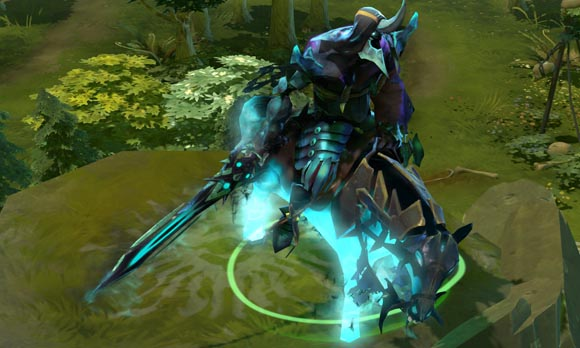
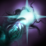
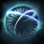
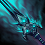

 亚巴顿
亚巴顿
背景故事
魔霭圣池，一个处于原初群石的裂缝，从中带有先兆力量的蒸汽不断溢出，作为家族力量的源泉，已经惠及数个世代。在居住于洞穴中的魔霭家族，每个新生儿都会在暗黑迷雾中接受沐浴，经过这样的洗礼，他们与大陆的神秘力量获得了内在的联系。随着他们长大，内心坚信自己的使命是誓死保护世袭的传统和领域的风俗——实际上他们守护的不过就是圣池本身。而迷雾的作用原理尚不明朗。 当初生的亚巴顿沐浴在圣池中时，众人都表示事情并不对劲。孩子的双眼里闪耀出洞察之光，在场所有人都大吃一惊，神父们纷纷交头接耳。而他之后的成长道路与所有魔霭族裔的传人并无差别——为战争接受训练，在危机时刻需要他挺身而出，率领家族的军队守卫先祖的大陆。但是亚巴顿总是特立独行。其他人挥着武器训练时，他喜欢在迷雾前沉思。他饱吸从圣池中涌出的蒸汽，开始学习将自己的灵魂与家族深处流出的力量相融合；他变成了被暗黑迷雾笼罩的怪物。 魔霭家族怨气冲天——不论老小都谴责他对自己的责任视而不见。但是亚巴顿驾临战场时，不满全都烟消云散，他们目睹了迷雾的强大力量让他恣意挥洒着生杀大权，族内任何领主都是望尘莫及。
| 迷雾缠绕 亚巴顿以部分生命为代价，释放带有死亡气息的迷雾缠绕伤害敌方单位或治疗友方单位。 魔法消耗：50/60/70/80
冷却时间：4.5
|
无光之盾 召唤黑暗能量环绕友方单位，创造一个护盾，护盾在消失前能吸收一定量的伤害。护盾被摧毁后，它会将之前吸收的伤害反馈给周围的敌方单位。施放时移除目标身上的负面魔法效果。 魔法消耗：100/105/110/115
冷却时间：12.0/10.0/8.0/6.0
|
魔霭诅咒 亚巴顿的攻击中带有寒心诅咒，受到攻击的敌人将被减速，同时所有攻击被减速目标的单位将提升移动速度和攻击速度，持续一定时间。 魔法消耗：0
冷却时间：0
|
回光返照 启动后所有受到的伤害转而治疗你，启动时还将移除大部分的负面效果。只要技能不在冷却过程中，在生命值低于400点时技能会自动启动。可用神杖升级。 在亚巴顿受到眩晕作用时依然可以开启回光返照，但是受到沉默作用时不可以。 魔法消耗：0/0/0
冷却时间：60.0/50.0/40.0
|